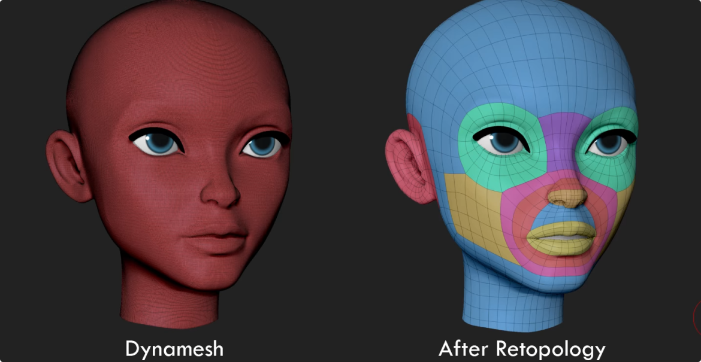
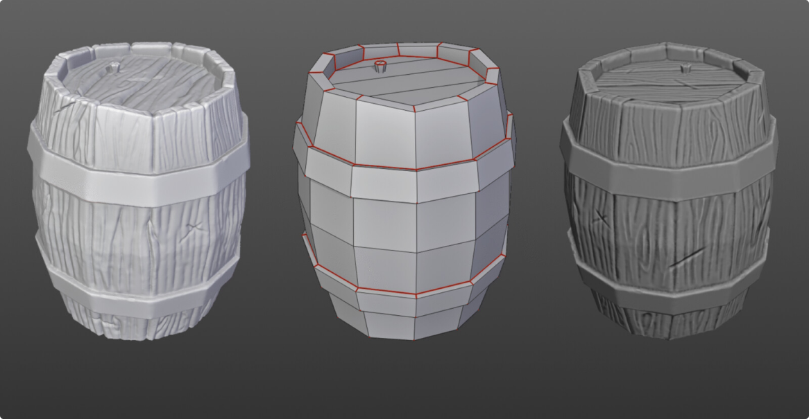
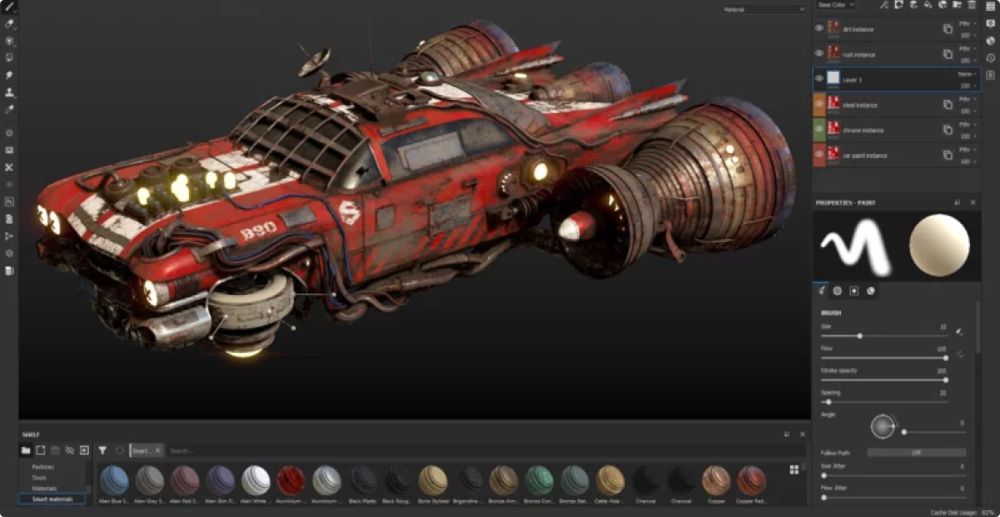
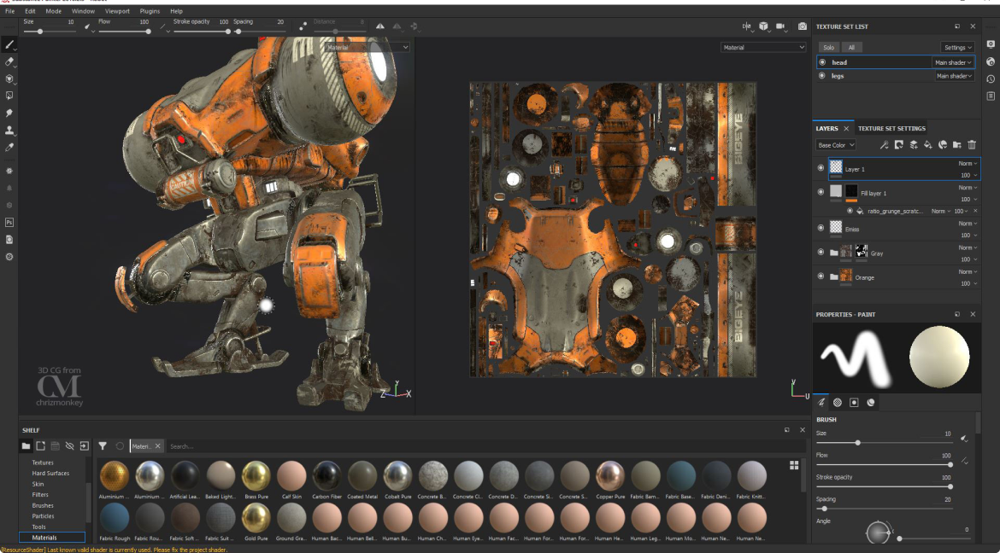

Этапы создания 3D-модели
Как было сказано ранее базовый процесс создания трехмерной модели включает три этапа:
- Моделирование
- Визуализация
- Вывод модели (печать либо на монитор)
Если рассматривать этапы подробнее становится ясно что каждый вид моделирования может отличаться содержанием этих этапов, поэтому мы будем рассматривать процесс создания 3D моделей для игр, т.к. он включает большое кол-во этапов, что позволит получить вам более полное представление о создании 3D моделей. Некоторые моменты из процесса могут меняться местами т.к. для создания персонажа и, например, танка пайплайн(т.е. процесс разработки) будет отличаться.
Концепт-арт
Концепт-арт — это идея воплощенная художником, по краткому её описанию.
Назначением концепт-арта является создание наброска объекта, который будет запущен в производство. За короткий срок необходимо подобрать наилучшую концепцию, иначе можно допустить ошибки на поздних этапах создания модели.
Скульптинг
Для начала художнику предстоит сделать скульпт модели. На этом этапе можно окунуться в творчество и лепить не задумываясь о полигонах.
После всего процесса скульптинга модель уже должна выглядеть максимально законченно, так как именно её мы и будем использовать для дальнейших этапов производства.
Такую модель нельзя будет запихать в игру, да что уж там, скорее всего сделать последующие этапы выполнить будет проблематично, так как на ней слишком много полигонов.
Ретопология
На этом этапе нам как раз таки и придётся уменьшить количество этих самых полигонов.
Ретопология — это перестроение полигональной сетки, создание новой геометрии поверх старой для дальнейшего его использования.
Низкополигональная сетка нам пригодится в первую очередь для оптимизации, так же для создания чистой сетки при дальнейшей анимации и создания UV карт.
Правда после этапа ретопологии, модель может показаться чересчур простой, плоской, но в дальнейшем мы это исправим.
UV-развертка
Данный этап нам нужен для того, чтобы наше запекание и текстуры вели себя корректным образом.
Если вы собирали кубик из бумаги, то тут вы тоже поймёте как это работает.

UV карта создаётся путем разрезания граней на модели, так например на картинке выше и ниже, мы чётко можем заметить где проходит разрез геометрии.
Запекание карт
Запекание карт необходимо для переноса детализации с высокополигональной модели(high poly) на низкополигональную(low poly).
В первую очередь это нужно для того, чтобы наша модель выглядела не плоско и корректно отображала находящееся в сцене освещение. Сейчас я расскажу о некоторых наиболее «популярных» картах.
Normal Map — как раз таки эта карта нам и позволяет добавить детализацию, не тратя на это лишние полигоны.
Это работает так: векторы, которые используются для определения того, как свет отражается от поверхности. Их можно использовать для контроля над переходом между гранями, но также их направление можно изменять, чтобы lowpoly-модель отражала свет так же, как более сложная модель.
Если вкратце, то низкополигональная модель начинает отражать поверхность так же как и высокополигональная. За счёт этого нам и кажется что модель стала более детализированной.
Ambient Occlusion — С этой картой намного проще, она добавляет тени на модели, где это необходимо. Тем самым модель становится более реалистичной.
Curvature — это карта просчитывает неровности на поверхности модели, так же выделяет все грани, после чего эти неровности можно будет использовать при текстурировании.
Текстурирование
Вот мы и добрались до практически последнего этапа в нашем процессе разработки. Этап текстурирования довольно важен, так как именно текстуры сильно влияют на восприятие модели.
Текстура — это массив цветовых точек, образующих изображение. Это не только раскраска объекта. Фактически, термин текстура означает шероховатость или гладкость поверхности объекта. Это те свойства поверхности, которые можно осязать.
PBR материалы — это материалы которые корректно отображают все текстуры, то есть шереховатости, отражения, затенения.
Заключение
Вот настолько много этапов и проходит 3D-художник, чтобы добиться желаемого результата. Далее мы рассмотрим ещё один специфичный этап - 3D-анимацию